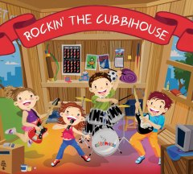
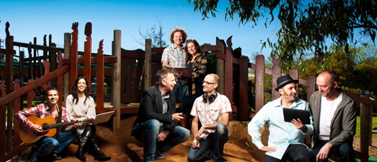

News
New CD available: "Silly Season"
Hi everyone! Cubbihouse Entertainment is proud to announce the release of our new "Silly Season" CD, packed full of fun 'holiday songs for the holiday road'. Below is the video clip from the first Silly Season single. We think you'll love it.
The song "Riding On This Train" explores the joy and anticipation of travelling to visit distant loved ones.
Click here to download "Riding On This Train" from iTunes!
My Musical Day CD raising money for Telethon!
It was smiles all round when Cubbihouse presented Telethon Speech & Hearing (TSH) with the first fund raising cheque from sales of the popular "My Musical Day CD" - a language development product developed by Cubbihouse in partnership with TSH. Read about the project and buy the CD here.
Cubbihouse's Will Axten with Bridget Pieterse, Director of Talkabout program
Rockin' The Cubbihouse CD!
Hi parents and music lovers!
The best kids rock CD eva is available from Cubbihouse!
Parents will love this fun mix of rock-inspired children's music just as much as their kids will.
With such titles as "I'm Allowed to Ride Around the Block", "Tippy Toes", "Rain, Rain Go Away", and "Kickin' Balls", Rockin' the Cubbihouse shines a joy-filled light on some of the most simple, but memorable, moments from childhood.
Developed by a creative group of Australian writers and musicians, many of whom are teachers and parents themselves, this CD inspires listeners to laugh, dance and sing along.
It is best enjoyed on drives with the family, at parties with friends or while just hanging out in the Cubbihouse.
If you're a kid aged from 3 to infinity, be sure to grab yourself a copy.
About
In September of 2009, a group of old friends sat down around a boardroom table to talk business. A shared passion for music had brought them together many years before, and numerous bands and musical projects had been spawned from the merging of their creative talents. This meeting however, was sparked by their desire to write music for children. It had to be fun, but it had to be serious business too. After all, they were grown-ups now. One by one they spruiked their ideas. Between belly-laughs and sing-alongs, pitches were fine-tuned and business proposals presented until, eventually, the idea for Cubbihouse (a children's music production company) was born.
The eight members of Cubbihouse, many of whom are teachers and parents themselves, researched and developed a concept based around producing music that parents would love just as much as their kids would. It had to be educational, fun, edgy and kid-friendly, but it had to be adult-friendly too. While Cubbihouse were researching the concept, many parents told them that the majority of kids' music products currently on the market were irritating, especially when played over and over again. So Cubbihouse had to find out just what it was that kids wanted to hear over and over again, but change the rules a little so that all members of the family could enjoy it.
Awesome Music Products
A year or so on and many rollicking creative meetings later, Cubbihouse released their first product; a CD called Rockin' the Cubbihouse. With such titles as "I'm Allowed to Ride Around the Block", "Tippy Toes", "Rain, Rain Go Away", and "Kickin' Balls", this rock-inspired album shines a joy-filled light on some of the most simple, but memorable, moments from childhood, inspiring listeners to laugh, dance and sing along. It is an album for kids aged from 3 to infinity. Rockin' the Cubbihouse pays homage to contemporary music, giving shameless nods to everything from Glam 80s Rock, to Reggae, to Folk Pop, to Heavy Metal.
Rockin' The Cubbihouse was soon followed by My Musical Day, a
special language development CD that was developed in partnership with
the Telethon Speech & Hearing Centre For Kids (TSH). The
product had immediate impact in Perth, with speech pathologists using
and recommending the product and Today Tonight broadcasting a special
feature on the amazing story behind the project. Read all about My
Musical Day here.
25% of product sales go to TSH.
Cubbihouse is a labour of love for its company members, all of whom are busy with demanding day jobs. But the weekly meetings, creative weekends, collaborative song writing sessions, LIVE shows and time spent in the recording studio are always accompanied by a joy de vivre rarely found in the workplace. When Cubbihouse tap into their collective inner-child something truly special happens.
Stay
tuned for future installments from Cubbihouse as we seek to establish
the company as a successful business and permanent fixture in the Perth
music landscape.
Buy
To purchase Cubbihouse Entertainment CDs via PayPal please use the buttons below. Be sure to add Internatinal postage if shippings to outside Australia. If you have any problems, questions or for large orders please email us direct at sales@cubbihouse.com
| Rocking the Cubbihouse | |
| My Musical Day | |
| Silly Season Holiday Songs for the Holiday Road  | |
| International Postage Must be added for orders shipped outside Australia | |
Our CDs are also available on iTunes and at the following stores:
- 78 Records, 914 Hay Street, Perth - www.78records.com.au
- Planet Video, 636-646 Beaufort Street, Mt Lawley - www.planetvideo.com.au
- Mills Record Bar, 22 Adelaide Street, Fremantle - www.mills.com.au
Contact us
You can contact Cubbihouse at: info@cubbihouse.com
Also you can become friends with Cubbihouse on Facebook.
Listen
To listen to tracks from the Rockin' the Cubbihouse CD click on the track names below:
- Track 8 – I'm in a Band
- Track 10 – My Very First Show
Live
Cubbihouse is performing live public shows regularly in Melville in 2012. We play two shows (10.30 & 11.30am) in the hall at the awesome Kadajiny Park. Shows fall on the last Sat of every month, including: Aug 25th, Sept 29th, Oct 27th and Nov 24th.
We are also peforming at the Perth Royal Show on Oct 6th!
Check Facebook for the latest shows or email: info@ozjam.com.au
Would you like Cubbihouse to perform at your next children’s party, function or event? The Cubbihouse Singers and Cubbihouse Band have outstanding reputations for getting the party started. There are many energetic, fun-filled options available; both designed to delight the little people in your life.
The Cubbihouse Singers
This is best suited to smaller functions such as birthday parties and backyard soirees. No set up is required. Our singers arrive in costume and with acoustic instruments, ready to share great vibes and songs with the kids. The show is designed to have the children singing, dancing and laughing along.
The Cubbihouse Band
This is a more dynamic, visual show with the whole band... guitar, drums, keyboard and vocals. Seeing a real band performing with real instruments is an exciting experience for young children. It's an opportunity for them to see just how music is made. This energetic, interactive show is best suited to outdoor events, festivals and concerts, although it is also available at “low volume” for smaller parties.
Prices start at $200!
To discuss your next event with Cubbihouse, please contact Chris on
0415 200 393, or email: parties@cubbihouse.com
Team
Will Axten – Managing Director
Skills & experience: 8 years in management, 9 years in marketing, 20 years as musician (bass guitar), 5 years in filmmaking and television, 5 years in multimedia production.
Bio: Will is a creative person with a strong drive to see his work succeed. Whilst always maintaining avenues for musical output (bands, recordings and promoting musical events) Will has built a successful career as a marketing professional.Will prides himself on delivering innovative and creative solutions to a high standard in all his work and always seeks to surround himself in the best people.
Jodie Tes – Creative Services Director
Skills & experience: 5 years in education, 20 years as musician (vocals, guitar and piano), 10 years in creative writing
Bio: By day Jodie is a high school teacher of English, Media Studies, Music and Italian. By night she performs as a Jazz singer at some of Perth's hippest Jazz clubs. Jodie, who completed her Bachelor of Music in 2001, has recorded three albums, won numerous song writing awards and toured both nationally and internationally. A keen creative writer, she is currently working on the final draft of her first novel.
Glenn Tweedie – Director, web and multimedia programming
Skills & experience: 20 years singing and recording, 10 years in IT administration, 10 years in advanced web programming, 8 years in online market research
Bio: Steeped in music his whole life, Glenn started violin, piano and music theory at age 5. He then played guitar as a teenager and went on to front several original rock bands. Glenn has built a successful career in IT and online market research. Becoming a father has reignited his passion for entertaining, and is relishing the opportunities that Cubbihouse provides.
Almin Fulurija – Director, design and marketing
Skills & experience: 20 years as musician (drums), 10 years in graphic design and marketing, 5 years in band management and events management.
Bio: Over the years Almin has changed career paths a few times but all his career choices have maintained a common theme. Work must be challenging, creative and most of all fun. Almin has managed to successfully incorporate all his work choices as an outlet for his creativity, wether it be as a professional graphic artist, freelance drummer, band manager or with the Cubbihouse team.
Kilian Albrecht – Musical Director, arrangement, production, guitars
Skills & experience: 24 years as a musician (composing, song writing, guitars, vocals and production), Diploma of Commercial Music, 5 years as a music teacher, 10 years musical instrument retail sales.
Bio: Kilian is a highly skilled guitarist and studio musician with vast experience in the production of high quality music recordings. He has a career specialising in stringed musical instruments and accessories, liasing with amateur and professional musicians seeking advice on sound issues and tone development. He also performs on a regular basis around Australia and draws inspiration from being a father.
Anna Wallwork – song writing, concept and character development
Skills & experience: 10 years as English Language Teacher, 15 years as classical violinist, 15 years as singer/song writer, 10 years in part Time child-care, 5 years in freelance journalism.
Bio: Anna Wallwork, a classically trained Violin player and singer/song writer, brings energy, musicianship and her love of communication to Cubbihouse. With a degree in Creative Writing and Education, Anna mixes the child world of imagination, with music rich in texture and charm. Her role in Cubbihouse provides the opportunity to re-create the magic and colour of her own childhood, and to pass it on to a new generation.
Terry Preston – recording engineer and music producer.
Skills & experience: 30 years as a working musician (drums and percussion), 20 years as a theatrical sound and lighting technician,10 years as studio engineer and music producer.
Bio: Terry Preston has extensive experience in the arts, working for 20 years as a theatrical lighting and sound engineer. During that time he recorded and released 3 acclaimed albums for his own original band, securing several local Western Australian rock awards and touring extensively. Terry has built a professional home recording studio where he records and produces Cubbihouse and many other artists.
Mark Ralph – song writing, keyboards, IT
Skills & experience: 30 years as musician (keyboards and song writing), 15 years in computer application development, 10 years in IT.
Bio: Mark has always combined his work in maths and computer science with a healthy mix of rock and roll. Mark has spent time gigging extensively, as well as being a consultant for big banks and dot com start ups. Mark has 2 kids of his own and loves sharing the exciting world of music with them. Through Cubbihouse he intends to take this to a much wider audience.